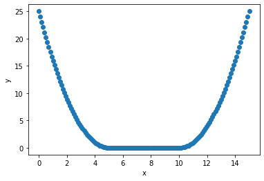

Contents
# import modules
import tensorflow as tf
import numpy as np
from matplotlib import pyplot as plt
---------------------------------------------------------------------------
ModuleNotFoundError Traceback (most recent call last)
Cell In[1], line 3
1 # import modules
----> 3 import tensorflow as tf
4 import numpy as np
5 from matplotlib import pyplot as plt
ModuleNotFoundError: No module named 'tensorflow'
# model definition
class _x_to_y(tf.keras.Model):
def __init__(self, ns=[16,16]):
super(_x_to_y, self).__init__()
self.ls = [
tf.keras.layers.Dense(n, 'softplus', \
) \
for n in ns]
self.ls += [tf.keras.layers.Dense(1)]
def __call__(self, x):
for l in self.ls:
x = l(x)
return x
def main(**kwargs):
xs = tf.keras.Input(shape=[1])
ys = _x_to_y(**kwargs)(xs)
model = tf.keras.Model(inputs = [xs], outputs = [ys])
model.compile('adam', 'mse')
return model
model = main()
# data generation
xs = np.linspace(-5,5,100)
ys = np.square(xs)
ys1 = ys[0:50]
ys2 = np.zeros([50])
ys3 = ys[50:]
ys = np.concatenate((ys1, ys2, ys3), axis = 0)
xs = tf.constant(np.linspace(0,15,150))
ys = tf.constant(ys)
xs = tf.expand_dims(xs, axis = 1)
ys = tf.expand_dims(ys, axis = 1)
plt.scatter(xs,ys)
plt.xlabel('x')
plt.ylabel('y')
plt.show()

# model calibration
h = model.fit([xs], [ys], epochs = 1000, verbose = 2)
plt.figure(1)
plt.semilogy(h.history['loss'], label='training loss')
plt.grid(which='both')
plt.legend()
plt.figure(2)
plt.scatter(xs[0::20], ys[0::20], c='m', marker='x')
plt.plot(xs, model.predict(xs))
plt.show()
Train on 150 samples
Epoch 1/1000
150/150 - 1s - loss: 72.4599
Epoch 2/1000
150/150 - 0s - loss: 69.5617
Epoch 3/1000
150/150 - 0s - loss: 66.9877
Epoch 4/1000
150/150 - 0s - loss: 64.7395
Epoch 5/1000
150/150 - 0s - loss: 62.8999
Epoch 6/1000
150/150 - 0s - loss: 61.2701
Epoch 7/1000
150/150 - 0s - loss: 59.9056
Epoch 8/1000
150/150 - 0s - loss: 58.6460
Epoch 9/1000
150/150 - 0s - loss: 57.8224
Epoch 10/1000
150/150 - 0s - loss: 57.1464
Epoch 11/1000
150/150 - 0s - loss: 56.3788
Epoch 12/1000
150/150 - 0s - loss: 56.1295
Epoch 13/1000
150/150 - 0s - loss: 55.7079
Epoch 14/1000
150/150 - 0s - loss: 55.4237
Epoch 15/1000
150/150 - 0s - loss: 55.2376
Epoch 16/1000
150/150 - 0s - loss: 55.0310
Epoch 17/1000
150/150 - 0s - loss: 54.7884
Epoch 18/1000
150/150 - 0s - loss: 54.5990
Epoch 19/1000
150/150 - 0s - loss: 54.3416
Epoch 20/1000
150/150 - 0s - loss: 54.1081
Epoch 21/1000
150/150 - 0s - loss: 53.8764
Epoch 22/1000
150/150 - 0s - loss: 53.6597
Epoch 23/1000
150/150 - 0s - loss: 53.3876
Epoch 24/1000
150/150 - 0s - loss: 53.1177
Epoch 25/1000
150/150 - 0s - loss: 52.9017
Epoch 26/1000
150/150 - 0s - loss: 52.6846
Epoch 27/1000
150/150 - 0s - loss: 52.3622
Epoch 28/1000
150/150 - 0s - loss: 52.1455
Epoch 29/1000
150/150 - 0s - loss: 51.8956
Epoch 30/1000
150/150 - 0s - loss: 51.5769
Epoch 31/1000
150/150 - 0s - loss: 51.3110
Epoch 32/1000
150/150 - 0s - loss: 51.0240
Epoch 33/1000
150/150 - 0s - loss: 50.7406
Epoch 34/1000
150/150 - 0s - loss: 50.4515
Epoch 35/1000
150/150 - 0s - loss: 50.1158
Epoch 36/1000
150/150 - 0s - loss: 49.8212
Epoch 37/1000
150/150 - 0s - loss: 49.5288
Epoch 38/1000
150/150 - 0s - loss: 49.1668
Epoch 39/1000
150/150 - 0s - loss: 48.8363
Epoch 40/1000
150/150 - 0s - loss: 48.5106
Epoch 41/1000
150/150 - 0s - loss: 48.1775
Epoch 42/1000
150/150 - 0s - loss: 47.7734
Epoch 43/1000
150/150 - 0s - loss: 47.4299
Epoch 44/1000
150/150 - 0s - loss: 47.0264
Epoch 45/1000
150/150 - 0s - loss: 46.7722
Epoch 46/1000
150/150 - 0s - loss: 46.3404
Epoch 47/1000
150/150 - 0s - loss: 45.9175
Epoch 48/1000
150/150 - 0s - loss: 45.5346
Epoch 49/1000
150/150 - 0s - loss: 45.1094
Epoch 50/1000
150/150 - 0s - loss: 44.7472
Epoch 51/1000
150/150 - 0s - loss: 44.2968
Epoch 52/1000
150/150 - 0s - loss: 43.9342
Epoch 53/1000
150/150 - 0s - loss: 43.4816
Epoch 54/1000
150/150 - 0s - loss: 43.0650
Epoch 55/1000
150/150 - 0s - loss: 42.5956
Epoch 56/1000
150/150 - 0s - loss: 42.1785
Epoch 57/1000
150/150 - 0s - loss: 41.7263
Epoch 58/1000
150/150 - 0s - loss: 41.3077
Epoch 59/1000
150/150 - 1s - loss: 40.8685
Epoch 60/1000
150/150 - 0s - loss: 40.4338
Epoch 61/1000
150/150 - 0s - loss: 39.9191
Epoch 62/1000
150/150 - 0s - loss: 39.4790
Epoch 63/1000
150/150 - 0s - loss: 39.0317
Epoch 64/1000
150/150 - 0s - loss: 38.4591
Epoch 65/1000
150/150 - 0s - loss: 38.0872
Epoch 66/1000
150/150 - 0s - loss: 37.6226
Epoch 67/1000
150/150 - 0s - loss: 37.2132
Epoch 68/1000
150/150 - 0s - loss: 36.7152
Epoch 69/1000
150/150 - 0s - loss: 36.2875
Epoch 70/1000
150/150 - 0s - loss: 35.8429
Epoch 71/1000
150/150 - 0s - loss: 35.4264
Epoch 72/1000
150/150 - 0s - loss: 34.9833
Epoch 73/1000
150/150 - 0s - loss: 34.5357
Epoch 74/1000
150/150 - 0s - loss: 34.1464
Epoch 75/1000
150/150 - 0s - loss: 33.7264
Epoch 76/1000
150/150 - 0s - loss: 33.3007
Epoch 77/1000
150/150 - 0s - loss: 32.8555
Epoch 78/1000
150/150 - 0s - loss: 32.4272
Epoch 79/1000
150/150 - 0s - loss: 32.0017
Epoch 80/1000
150/150 - 0s - loss: 31.6178
Epoch 81/1000
150/150 - 0s - loss: 31.1909
Epoch 82/1000
150/150 - 0s - loss: 30.8270
Epoch 83/1000
150/150 - 0s - loss: 30.4468
Epoch 84/1000
150/150 - 0s - loss: 30.0871
Epoch 85/1000
150/150 - 0s - loss: 29.6780
Epoch 86/1000
150/150 - 0s - loss: 29.2905
Epoch 87/1000
150/150 - 0s - loss: 28.9593
Epoch 88/1000
150/150 - 0s - loss: 28.5593
Epoch 89/1000
150/150 - 0s - loss: 28.2349
Epoch 90/1000
150/150 - 0s - loss: 27.9257
Epoch 91/1000
150/150 - 0s - loss: 27.5503
Epoch 92/1000
150/150 - 0s - loss: 27.2631
Epoch 93/1000
150/150 - 0s - loss: 26.8557
Epoch 94/1000
150/150 - 0s - loss: 26.5872
Epoch 95/1000
150/150 - 0s - loss: 26.2553
Epoch 96/1000
150/150 - 0s - loss: 25.9796
Epoch 97/1000
150/150 - 0s - loss: 25.6080
Epoch 98/1000
150/150 - 0s - loss: 25.2977
Epoch 99/1000
150/150 - 0s - loss: 25.0113
Epoch 100/1000
150/150 - 0s - loss: 24.6748
Epoch 101/1000
150/150 - 0s - loss: 24.4063
Epoch 102/1000
150/150 - 0s - loss: 24.1113
Epoch 103/1000
150/150 - 0s - loss: 23.8446
Epoch 104/1000
150/150 - 0s - loss: 23.5111
Epoch 105/1000
150/150 - 0s - loss: 23.2826
Epoch 106/1000
150/150 - 0s - loss: 22.9905
Epoch 107/1000
150/150 - 0s - loss: 22.7551
Epoch 108/1000
150/150 - 0s - loss: 22.4517
Epoch 109/1000
150/150 - 0s - loss: 22.2134
Epoch 110/1000
150/150 - 0s - loss: 22.2370
Epoch 111/1000
150/150 - 0s - loss: 21.7088
Epoch 112/1000
150/150 - 0s - loss: 21.4661
Epoch 113/1000
150/150 - 0s - loss: 21.3528
Epoch 114/1000
150/150 - 0s - loss: 21.0547
Epoch 115/1000
150/150 - 0s - loss: 20.8077
Epoch 116/1000
150/150 - 0s - loss: 20.6005
Epoch 117/1000
150/150 - 0s - loss: 20.3793
Epoch 118/1000
150/150 - 0s - loss: 20.2041
Epoch 119/1000
150/150 - 0s - loss: 19.9614
Epoch 120/1000
150/150 - 0s - loss: 19.7673
Epoch 121/1000
150/150 - 0s - loss: 19.5921
Epoch 122/1000
150/150 - 0s - loss: 19.4124
Epoch 123/1000
150/150 - 0s - loss: 19.2577
Epoch 124/1000
150/150 - 0s - loss: 19.0279
Epoch 125/1000
150/150 - 0s - loss: 18.9914
Epoch 126/1000
150/150 - 0s - loss: 18.7171
Epoch 127/1000
150/150 - 0s - loss: 18.5133
Epoch 128/1000
150/150 - 0s - loss: 18.3259
Epoch 129/1000
150/150 - 0s - loss: 18.2168
Epoch 130/1000
150/150 - 0s - loss: 18.0091
Epoch 131/1000
150/150 - 0s - loss: 17.8646
Epoch 132/1000
150/150 - 0s - loss: 17.7036
Epoch 133/1000
150/150 - 0s - loss: 17.5424
Epoch 134/1000
150/150 - 0s - loss: 17.3768
Epoch 135/1000
150/150 - 0s - loss: 17.2817
Epoch 136/1000
150/150 - 0s - loss: 17.1297
Epoch 137/1000
150/150 - 0s - loss: 16.9989
Epoch 138/1000
150/150 - 0s - loss: 16.8242
Epoch 139/1000
150/150 - 0s - loss: 16.6705
Epoch 140/1000
150/150 - 0s - loss: 16.6919
Epoch 141/1000
150/150 - 0s - loss: 16.3935
Epoch 142/1000
150/150 - 0s - loss: 16.3118
Epoch 143/1000
150/150 - 0s - loss: 16.1753
Epoch 144/1000
150/150 - 0s - loss: 16.0991
Epoch 145/1000
150/150 - 0s - loss: 15.9391
Epoch 146/1000
150/150 - 0s - loss: 15.7869
Epoch 147/1000
150/150 - 0s - loss: 15.6586
Epoch 148/1000
150/150 - 0s - loss: 15.5769
Epoch 149/1000
150/150 - 0s - loss: 15.4568
Epoch 150/1000
150/150 - 0s - loss: 15.3739
Epoch 151/1000
150/150 - 0s - loss: 15.2220
Epoch 152/1000
150/150 - 0s - loss: 15.0822
Epoch 153/1000
150/150 - 0s - loss: 15.0174
Epoch 154/1000
150/150 - 0s - loss: 14.8738
Epoch 155/1000
150/150 - 0s - loss: 14.8380
Epoch 156/1000
150/150 - 0s - loss: 14.6783
Epoch 157/1000
150/150 - 0s - loss: 14.6155
Epoch 158/1000
150/150 - 0s - loss: 14.4474
Epoch 159/1000
150/150 - 0s - loss: 14.3421
Epoch 160/1000
150/150 - 0s - loss: 14.2801
Epoch 161/1000
150/150 - 0s - loss: 14.1781
Epoch 162/1000
150/150 - 0s - loss: 14.0513
Epoch 163/1000
150/150 - 0s - loss: 13.9860
Epoch 164/1000
150/150 - 0s - loss: 13.8901
Epoch 165/1000
150/150 - 0s - loss: 13.8173
Epoch 166/1000
150/150 - 0s - loss: 13.7437
Epoch 167/1000
150/150 - 0s - loss: 13.6038
Epoch 168/1000
150/150 - 0s - loss: 13.5083
Epoch 169/1000
150/150 - 0s - loss: 13.4663
Epoch 170/1000
150/150 - 0s - loss: 13.3478
Epoch 171/1000
150/150 - 0s - loss: 13.2272
Epoch 172/1000
150/150 - 0s - loss: 13.1139
Epoch 173/1000
150/150 - 0s - loss: 13.1094
Epoch 174/1000
150/150 - 0s - loss: 13.0089
Epoch 175/1000
150/150 - 0s - loss: 12.9105
Epoch 176/1000
150/150 - 0s - loss: 12.8408
Epoch 177/1000
150/150 - 0s - loss: 12.7441
Epoch 178/1000
150/150 - 0s - loss: 12.6711
Epoch 179/1000
150/150 - 0s - loss: 12.5509
Epoch 180/1000
150/150 - 0s - loss: 12.5140
Epoch 181/1000
150/150 - 0s - loss: 12.4406
Epoch 182/1000
150/150 - 0s - loss: 12.3515
Epoch 183/1000
150/150 - 0s - loss: 12.2533
Epoch 184/1000
150/150 - 0s - loss: 12.2152
Epoch 185/1000
150/150 - 0s - loss: 12.1179
Epoch 186/1000
150/150 - 0s - loss: 12.0504
Epoch 187/1000
150/150 - 0s - loss: 12.0328
Epoch 188/1000
150/150 - 0s - loss: 11.9276
Epoch 189/1000
150/150 - 0s - loss: 11.7813
Epoch 190/1000
150/150 - 0s - loss: 11.7213
Epoch 191/1000
150/150 - 0s - loss: 11.7555
Epoch 192/1000
150/150 - 0s - loss: 11.6868
Epoch 193/1000
150/150 - 0s - loss: 11.5435
Epoch 194/1000
150/150 - 0s - loss: 11.4435
Epoch 195/1000
150/150 - 0s - loss: 11.3577
Epoch 196/1000
150/150 - 0s - loss: 11.2962
Epoch 197/1000
150/150 - 0s - loss: 11.2797
Epoch 198/1000
150/150 - 0s - loss: 11.2006
Epoch 199/1000
150/150 - 0s - loss: 11.1355
Epoch 200/1000
150/150 - 0s - loss: 11.0333
Epoch 201/1000
150/150 - 0s - loss: 11.0334
Epoch 202/1000
150/150 - 0s - loss: 10.9310
Epoch 203/1000
150/150 - 0s - loss: 10.8683
Epoch 204/1000
150/150 - 0s - loss: 10.8039
Epoch 205/1000
150/150 - 0s - loss: 10.6550
Epoch 206/1000
150/150 - 0s - loss: 10.6319
Epoch 207/1000
150/150 - 0s - loss: 10.6151
Epoch 208/1000
150/150 - 0s - loss: 10.5017
Epoch 209/1000
150/150 - 0s - loss: 10.4608
Epoch 210/1000
150/150 - 0s - loss: 10.4369
Epoch 211/1000
150/150 - 0s - loss: 10.2887
Epoch 212/1000
150/150 - 0s - loss: 10.1829
Epoch 213/1000
150/150 - 0s - loss: 10.1666
Epoch 214/1000
150/150 - 0s - loss: 10.0598
Epoch 215/1000
150/150 - 0s - loss: 9.9868
Epoch 216/1000
150/150 - 0s - loss: 9.8754
Epoch 217/1000
150/150 - 0s - loss: 9.8329
Epoch 218/1000
150/150 - 0s - loss: 9.7030
Epoch 219/1000
150/150 - 0s - loss: 9.6439
Epoch 220/1000
150/150 - 0s - loss: 9.7190
Epoch 221/1000
150/150 - 0s - loss: 9.4707
Epoch 222/1000
150/150 - 0s - loss: 9.4294
Epoch 223/1000
150/150 - 0s - loss: 9.3754
Epoch 224/1000
150/150 - 0s - loss: 9.2593
Epoch 225/1000
150/150 - 0s - loss: 9.2118
Epoch 226/1000
150/150 - 0s - loss: 9.1532
Epoch 227/1000
150/150 - 0s - loss: 9.1232
Epoch 228/1000
150/150 - 0s - loss: 9.0707
Epoch 229/1000
150/150 - 0s - loss: 8.9591
Epoch 230/1000
150/150 - 0s - loss: 8.8912
Epoch 231/1000
150/150 - 0s - loss: 8.8812
Epoch 232/1000
150/150 - 0s - loss: 8.8130
Epoch 233/1000
150/150 - 0s - loss: 8.7850
Epoch 234/1000
150/150 - 0s - loss: 8.6890
Epoch 235/1000
150/150 - 0s - loss: 8.6836
Epoch 236/1000
150/150 - 0s - loss: 8.6263
Epoch 237/1000
150/150 - 0s - loss: 8.6469
Epoch 238/1000
150/150 - 0s - loss: 8.5010
Epoch 239/1000
150/150 - 0s - loss: 8.5523
Epoch 240/1000
150/150 - 0s - loss: 8.4598
Epoch 241/1000
150/150 - 0s - loss: 8.4054
Epoch 242/1000
150/150 - 0s - loss: 8.3489
Epoch 243/1000
150/150 - 0s - loss: 8.3760
Epoch 244/1000
150/150 - 0s - loss: 8.2890
Epoch 245/1000
150/150 - 0s - loss: 8.2142
Epoch 246/1000
150/150 - 0s - loss: 8.1733
Epoch 247/1000
150/150 - 0s - loss: 8.1392
Epoch 248/1000
150/150 - 0s - loss: 8.0854
Epoch 249/1000
150/150 - 0s - loss: 8.1462
Epoch 250/1000
150/150 - 0s - loss: 8.0069
Epoch 251/1000
150/150 - 0s - loss: 8.0164
Epoch 252/1000
150/150 - 0s - loss: 8.0406
Epoch 253/1000
150/150 - 0s - loss: 7.9273
Epoch 254/1000
150/150 - 0s - loss: 7.8646
Epoch 255/1000
150/150 - 0s - loss: 7.8448
Epoch 256/1000
150/150 - 0s - loss: 7.8581
Epoch 257/1000
150/150 - 0s - loss: 7.8058
Epoch 258/1000
150/150 - 0s - loss: 7.7624
Epoch 259/1000
150/150 - 0s - loss: 7.6981
Epoch 260/1000
150/150 - 0s - loss: 7.7139
Epoch 261/1000
150/150 - 0s - loss: 7.6394
Epoch 262/1000
150/150 - 0s - loss: 7.6258
Epoch 263/1000
150/150 - 0s - loss: 7.6056
Epoch 264/1000
150/150 - 0s - loss: 7.5508
Epoch 265/1000
150/150 - 0s - loss: 7.5337
Epoch 266/1000
150/150 - 0s - loss: 7.5229
Epoch 267/1000
150/150 - 0s - loss: 7.4629
Epoch 268/1000
150/150 - 0s - loss: 7.4454
Epoch 269/1000
150/150 - 0s - loss: 7.5797
Epoch 270/1000
150/150 - 0s - loss: 7.3925
Epoch 271/1000
150/150 - 0s - loss: 7.4444
Epoch 272/1000
150/150 - 0s - loss: 7.3276
Epoch 273/1000
150/150 - 0s - loss: 7.3086
Epoch 274/1000
150/150 - 0s - loss: 7.2493
Epoch 275/1000
150/150 - 0s - loss: 7.2320
Epoch 276/1000
150/150 - 0s - loss: 7.2001
Epoch 277/1000
150/150 - 0s - loss: 7.2819
Epoch 278/1000
150/150 - 0s - loss: 7.1935
Epoch 279/1000
150/150 - 0s - loss: 7.1151
Epoch 280/1000
150/150 - 0s - loss: 7.1652
Epoch 281/1000
150/150 - 0s - loss: 7.1550
Epoch 282/1000
150/150 - 0s - loss: 7.0961
Epoch 283/1000
150/150 - 0s - loss: 7.0160
Epoch 284/1000
150/150 - 0s - loss: 7.0264
Epoch 285/1000
150/150 - 0s - loss: 7.0122
Epoch 286/1000
150/150 - 0s - loss: 6.9367
Epoch 287/1000
150/150 - 0s - loss: 6.9532
Epoch 288/1000
150/150 - 0s - loss: 7.0451
Epoch 289/1000
150/150 - 0s - loss: 7.0137
Epoch 290/1000
150/150 - 0s - loss: 7.0082
Epoch 291/1000
150/150 - 0s - loss: 7.0752
Epoch 292/1000
150/150 - 0s - loss: 6.9302
Epoch 293/1000
150/150 - 0s - loss: 6.8322
Epoch 294/1000
150/150 - 0s - loss: 7.0119
Epoch 295/1000
150/150 - 0s - loss: 6.7489
Epoch 296/1000
150/150 - 0s - loss: 6.8766
Epoch 297/1000
150/150 - 0s - loss: 6.7241
Epoch 298/1000
150/150 - 0s - loss: 6.9930
Epoch 299/1000
150/150 - 0s - loss: 6.9071
Epoch 300/1000
150/150 - 0s - loss: 6.6683
Epoch 301/1000
150/150 - 0s - loss: 6.6972
Epoch 302/1000
150/150 - 0s - loss: 6.5863
Epoch 303/1000
150/150 - 0s - loss: 6.6485
Epoch 304/1000
150/150 - 0s - loss: 6.5770
Epoch 305/1000
150/150 - 0s - loss: 6.5873
Epoch 306/1000
150/150 - 0s - loss: 6.5066
Epoch 307/1000
150/150 - 0s - loss: 6.4868
Epoch 308/1000
150/150 - 0s - loss: 6.4604
Epoch 309/1000
150/150 - 0s - loss: 6.5418
Epoch 310/1000
150/150 - 0s - loss: 6.4161
Epoch 311/1000
150/150 - 0s - loss: 6.4433
Epoch 312/1000
150/150 - 0s - loss: 6.4510
Epoch 313/1000
150/150 - 0s - loss: 6.4424
Epoch 314/1000
150/150 - 0s - loss: 6.3430
Epoch 315/1000
150/150 - 0s - loss: 6.3887
Epoch 316/1000
150/150 - 0s - loss: 6.3481
Epoch 317/1000
150/150 - 0s - loss: 6.3368
Epoch 318/1000
150/150 - 0s - loss: 6.3115
Epoch 319/1000
150/150 - 0s - loss: 6.2715
Epoch 320/1000
150/150 - 0s - loss: 6.2482
Epoch 321/1000
150/150 - 0s - loss: 6.2737
Epoch 322/1000
150/150 - 0s - loss: 6.3521
Epoch 323/1000
150/150 - 0s - loss: 6.1935
Epoch 324/1000
150/150 - 0s - loss: 6.4263
Epoch 325/1000
150/150 - 0s - loss: 6.1543
Epoch 326/1000
150/150 - 0s - loss: 6.2714
Epoch 327/1000
150/150 - 0s - loss: 6.2917
Epoch 328/1000
150/150 - 0s - loss: 6.1819
Epoch 329/1000
150/150 - 0s - loss: 6.0886
Epoch 330/1000
150/150 - 0s - loss: 6.1817
Epoch 331/1000
150/150 - 0s - loss: 6.1167
Epoch 332/1000
150/150 - 0s - loss: 6.0936
Epoch 333/1000
150/150 - 0s - loss: 6.1523
Epoch 334/1000
150/150 - 0s - loss: 6.0517
Epoch 335/1000
150/150 - 0s - loss: 6.0712
Epoch 336/1000
150/150 - 0s - loss: 6.1980
Epoch 337/1000
150/150 - 0s - loss: 5.9563
Epoch 338/1000
150/150 - 0s - loss: 6.1195
Epoch 339/1000
150/150 - 0s - loss: 5.9342
Epoch 340/1000
150/150 - 0s - loss: 5.9672
Epoch 341/1000
150/150 - 0s - loss: 5.9127
Epoch 342/1000
150/150 - 0s - loss: 5.9112
Epoch 343/1000
150/150 - 0s - loss: 5.8887
Epoch 344/1000
150/150 - 0s - loss: 5.8587
Epoch 345/1000
150/150 - 0s - loss: 5.8502
Epoch 346/1000
150/150 - 0s - loss: 5.8434
Epoch 347/1000
150/150 - 0s - loss: 5.8432
Epoch 348/1000
150/150 - 0s - loss: 5.7994
Epoch 349/1000
150/150 - 0s - loss: 5.7875
Epoch 350/1000
150/150 - 0s - loss: 5.7743
Epoch 351/1000
150/150 - 0s - loss: 5.7594
Epoch 352/1000
150/150 - 0s - loss: 5.9063
Epoch 353/1000
150/150 - 0s - loss: 5.6999
Epoch 354/1000
150/150 - 0s - loss: 5.8124
Epoch 355/1000
150/150 - 0s - loss: 5.7256
Epoch 356/1000
150/150 - 0s - loss: 5.7614
Epoch 357/1000
150/150 - 0s - loss: 5.8232
Epoch 358/1000
150/150 - 0s - loss: 5.7221
Epoch 359/1000
150/150 - 0s - loss: 5.6606
Epoch 360/1000
150/150 - 0s - loss: 5.6692
Epoch 361/1000
150/150 - 0s - loss: 5.6732
Epoch 362/1000
150/150 - 0s - loss: 5.6130
Epoch 363/1000
150/150 - 0s - loss: 5.5833
Epoch 364/1000
150/150 - 0s - loss: 5.5751
Epoch 365/1000
150/150 - 0s - loss: 5.5666
Epoch 366/1000
150/150 - 0s - loss: 5.5181
Epoch 367/1000
150/150 - 0s - loss: 5.6232
Epoch 368/1000
150/150 - 0s - loss: 5.5362
Epoch 369/1000
150/150 - 0s - loss: 5.5456
Epoch 370/1000
150/150 - 0s - loss: 5.5123
Epoch 371/1000
150/150 - 0s - loss: 5.4733
Epoch 372/1000
150/150 - 0s - loss: 5.5025
Epoch 373/1000
150/150 - 0s - loss: 5.4316
Epoch 374/1000
150/150 - 0s - loss: 5.4322
Epoch 375/1000
150/150 - 0s - loss: 5.4607
Epoch 376/1000
150/150 - 0s - loss: 5.3996
Epoch 377/1000
150/150 - 0s - loss: 5.4348
Epoch 378/1000
150/150 - 0s - loss: 5.3971
Epoch 379/1000
150/150 - 0s - loss: 5.4661
Epoch 380/1000
150/150 - 0s - loss: 5.3555
Epoch 381/1000
150/150 - 0s - loss: 5.4913
Epoch 382/1000
150/150 - 0s - loss: 5.4259
Epoch 383/1000
150/150 - 0s - loss: 5.3354
Epoch 384/1000
150/150 - 0s - loss: 5.3193
Epoch 385/1000
150/150 - 0s - loss: 5.4167
Epoch 386/1000
150/150 - 0s - loss: 5.2567
Epoch 387/1000
150/150 - 0s - loss: 5.2891
Epoch 388/1000
150/150 - 0s - loss: 5.2515
Epoch 389/1000
150/150 - 0s - loss: 5.3492
Epoch 390/1000
150/150 - 0s - loss: 5.3528
Epoch 391/1000
150/150 - 0s - loss: 5.2656
Epoch 392/1000
150/150 - 0s - loss: 5.3418
Epoch 393/1000
150/150 - 0s - loss: 5.2005
Epoch 394/1000
150/150 - 0s - loss: 5.2897
Epoch 395/1000
150/150 - 0s - loss: 5.1656
Epoch 396/1000
150/150 - 0s - loss: 5.2960
Epoch 397/1000
150/150 - 0s - loss: 5.0984
Epoch 398/1000
150/150 - 0s - loss: 5.2232
Epoch 399/1000
150/150 - 0s - loss: 5.1424
Epoch 400/1000
150/150 - 0s - loss: 5.1945
Epoch 401/1000
150/150 - 0s - loss: 5.1369
Epoch 402/1000
150/150 - 0s - loss: 5.1384
Epoch 403/1000
150/150 - 0s - loss: 5.0983
Epoch 404/1000
150/150 - 0s - loss: 5.1319
Epoch 405/1000
150/150 - 0s - loss: 5.0394
Epoch 406/1000
150/150 - 0s - loss: 5.0355
Epoch 407/1000
150/150 - 0s - loss: 5.0681
Epoch 408/1000
150/150 - 0s - loss: 4.9915
Epoch 409/1000
150/150 - 0s - loss: 5.0328
Epoch 410/1000
150/150 - 0s - loss: 5.0384
Epoch 411/1000
150/150 - 0s - loss: 4.9969
Epoch 412/1000
150/150 - 0s - loss: 5.0091
Epoch 413/1000
150/150 - 0s - loss: 4.9940
Epoch 414/1000
150/150 - 0s - loss: 4.9826
Epoch 415/1000
150/150 - 0s - loss: 4.9400
Epoch 416/1000
150/150 - 0s - loss: 4.9478
Epoch 417/1000
150/150 - 0s - loss: 4.9124
Epoch 418/1000
150/150 - 0s - loss: 4.8658
Epoch 419/1000
150/150 - 0s - loss: 4.9971
Epoch 420/1000
150/150 - 0s - loss: 4.8936
Epoch 421/1000
150/150 - 0s - loss: 4.9900
Epoch 422/1000
150/150 - 0s - loss: 4.8896
Epoch 423/1000
150/150 - 0s - loss: 4.8935
Epoch 424/1000
150/150 - 0s - loss: 4.8354
Epoch 425/1000
150/150 - 0s - loss: 4.8931
Epoch 426/1000
150/150 - 0s - loss: 4.8183
Epoch 427/1000
150/150 - 0s - loss: 4.8208
Epoch 428/1000
150/150 - 0s - loss: 4.8044
Epoch 429/1000
150/150 - 0s - loss: 4.7872
Epoch 430/1000
150/150 - 0s - loss: 4.8046
Epoch 431/1000
150/150 - 0s - loss: 4.7591
Epoch 432/1000
150/150 - 0s - loss: 4.7836
Epoch 433/1000
150/150 - 0s - loss: 4.7842
Epoch 434/1000
150/150 - 0s - loss: 4.8008
Epoch 435/1000
150/150 - 0s - loss: 4.7319
Epoch 436/1000
150/150 - 0s - loss: 4.7453
Epoch 437/1000
150/150 - 0s - loss: 4.8130
Epoch 438/1000
150/150 - 0s - loss: 4.6928
Epoch 439/1000
150/150 - 0s - loss: 4.8567
Epoch 440/1000
150/150 - 0s - loss: 4.7031
Epoch 441/1000
150/150 - 0s - loss: 4.6722
Epoch 442/1000
150/150 - 0s - loss: 4.6062
Epoch 443/1000
150/150 - 0s - loss: 4.7445
Epoch 444/1000
150/150 - 0s - loss: 4.5887
Epoch 445/1000
150/150 - 0s - loss: 4.6965
Epoch 446/1000
150/150 - 0s - loss: 4.5666
Epoch 447/1000
150/150 - 0s - loss: 4.6433
Epoch 448/1000
150/150 - 0s - loss: 4.5809
Epoch 449/1000
150/150 - 0s - loss: 4.5604
Epoch 450/1000
150/150 - 0s - loss: 4.5432
Epoch 451/1000
150/150 - 0s - loss: 4.5177
Epoch 452/1000
150/150 - 0s - loss: 4.5208
Epoch 453/1000
150/150 - 0s - loss: 4.5300
Epoch 454/1000
150/150 - 0s - loss: 4.6413
Epoch 455/1000
150/150 - 0s - loss: 4.5179
Epoch 456/1000
150/150 - 0s - loss: 4.5750
Epoch 457/1000
150/150 - 0s - loss: 4.4759
Epoch 458/1000
150/150 - 0s - loss: 4.5201
Epoch 459/1000
150/150 - 0s - loss: 4.4983
Epoch 460/1000
150/150 - 0s - loss: 4.5308
Epoch 461/1000
150/150 - 0s - loss: 4.5316
Epoch 462/1000
150/150 - 0s - loss: 4.5592
Epoch 463/1000
150/150 - 0s - loss: 4.4623
Epoch 464/1000
150/150 - 0s - loss: 4.4171
Epoch 465/1000
150/150 - 0s - loss: 4.3895
Epoch 466/1000
150/150 - 0s - loss: 4.4911
Epoch 467/1000
150/150 - 0s - loss: 4.3305
Epoch 468/1000
150/150 - 0s - loss: 4.3711
Epoch 469/1000
150/150 - 0s - loss: 4.4385
Epoch 470/1000
150/150 - 0s - loss: 4.3688
Epoch 471/1000
150/150 - 0s - loss: 4.3674
Epoch 472/1000
150/150 - 0s - loss: 4.3082
Epoch 473/1000
150/150 - 0s - loss: 4.3489
Epoch 474/1000
150/150 - 0s - loss: 4.3189
Epoch 475/1000
150/150 - 0s - loss: 4.2966
Epoch 476/1000
150/150 - 0s - loss: 4.4078
Epoch 477/1000
150/150 - 0s - loss: 4.2256
Epoch 478/1000
150/150 - 0s - loss: 4.3649
Epoch 479/1000
150/150 - 0s - loss: 4.4037
Epoch 480/1000
150/150 - 0s - loss: 4.2424
Epoch 481/1000
150/150 - 0s - loss: 4.4337
Epoch 482/1000
150/150 - 0s - loss: 4.2554
Epoch 483/1000
150/150 - 0s - loss: 4.3517
Epoch 484/1000
150/150 - 0s - loss: 4.2239
Epoch 485/1000
150/150 - 0s - loss: 4.3154
Epoch 486/1000
150/150 - 0s - loss: 4.1494
Epoch 487/1000
150/150 - 0s - loss: 4.2268
Epoch 488/1000
150/150 - 0s - loss: 4.1581
Epoch 489/1000
150/150 - 0s - loss: 4.1991
Epoch 490/1000
150/150 - 0s - loss: 4.0861
Epoch 491/1000
150/150 - 0s - loss: 4.2021
Epoch 492/1000
150/150 - 0s - loss: 4.1583
Epoch 493/1000
150/150 - 0s - loss: 4.1528
Epoch 494/1000
150/150 - 0s - loss: 4.1217
Epoch 495/1000
150/150 - 0s - loss: 4.2329
Epoch 496/1000
150/150 - 0s - loss: 4.1088
Epoch 497/1000
150/150 - 0s - loss: 4.1633
Epoch 498/1000
150/150 - 0s - loss: 4.1691
Epoch 499/1000
150/150 - 0s - loss: 4.0826
Epoch 500/1000
150/150 - 0s - loss: 4.1176
Epoch 501/1000
150/150 - 0s - loss: 4.0774
Epoch 502/1000
150/150 - 0s - loss: 4.0794
Epoch 503/1000
150/150 - 0s - loss: 4.0721
Epoch 504/1000
150/150 - 0s - loss: 4.0973
Epoch 505/1000
150/150 - 0s - loss: 4.0456
Epoch 506/1000
150/150 - 0s - loss: 3.9659
Epoch 507/1000
150/150 - 0s - loss: 3.9622
Epoch 508/1000
150/150 - 0s - loss: 3.9591
Epoch 509/1000
150/150 - 0s - loss: 3.9324
Epoch 510/1000
150/150 - 0s - loss: 3.9745
Epoch 511/1000
150/150 - 0s - loss: 3.9334
Epoch 512/1000
150/150 - 0s - loss: 3.9694
Epoch 513/1000
150/150 - 0s - loss: 3.8935
Epoch 514/1000
150/150 - 0s - loss: 3.8994
Epoch 515/1000
150/150 - 0s - loss: 3.8854
Epoch 516/1000
150/150 - 0s - loss: 3.9732
Epoch 517/1000
150/150 - 0s - loss: 3.8711
Epoch 518/1000
150/150 - 0s - loss: 4.0579
Epoch 519/1000
150/150 - 0s - loss: 3.8368
Epoch 520/1000
150/150 - 0s - loss: 3.8838
Epoch 521/1000
150/150 - 0s - loss: 3.8967
Epoch 522/1000
150/150 - 0s - loss: 3.8635
Epoch 523/1000
150/150 - 0s - loss: 3.8020
Epoch 524/1000
150/150 - 0s - loss: 3.8122
Epoch 525/1000
150/150 - 0s - loss: 3.7850
Epoch 526/1000
150/150 - 0s - loss: 3.8921
Epoch 527/1000
150/150 - 0s - loss: 3.8998
Epoch 528/1000
150/150 - 0s - loss: 3.7696
Epoch 529/1000
150/150 - 0s - loss: 3.7950
Epoch 530/1000
150/150 - 0s - loss: 3.7517
Epoch 531/1000
150/150 - 0s - loss: 3.8553
Epoch 532/1000
150/150 - 0s - loss: 3.7073
Epoch 533/1000
150/150 - 0s - loss: 3.7180
Epoch 534/1000
150/150 - 0s - loss: 3.6715
Epoch 535/1000
150/150 - 0s - loss: 3.6861
Epoch 536/1000
150/150 - 0s - loss: 3.7235
Epoch 537/1000
150/150 - 0s - loss: 3.6816
Epoch 538/1000
150/150 - 0s - loss: 3.6582
Epoch 539/1000
150/150 - 0s - loss: 3.6299
Epoch 540/1000
150/150 - 0s - loss: 3.6269
Epoch 541/1000
150/150 - 0s - loss: 3.7022
Epoch 542/1000
150/150 - 0s - loss: 3.7037
Epoch 543/1000
150/150 - 0s - loss: 3.6095
Epoch 544/1000
150/150 - 0s - loss: 3.6109
Epoch 545/1000
150/150 - 0s - loss: 3.6092
Epoch 546/1000
150/150 - 0s - loss: 3.5805
Epoch 547/1000
150/150 - 0s - loss: 3.6103
Epoch 548/1000
150/150 - 0s - loss: 3.5454
Epoch 549/1000
150/150 - 0s - loss: 3.5985
Epoch 550/1000
150/150 - 0s - loss: 3.6501
Epoch 551/1000
150/150 - 0s - loss: 3.5197
Epoch 552/1000
150/150 - 0s - loss: 3.6005
Epoch 553/1000
150/150 - 0s - loss: 3.5021
Epoch 554/1000
150/150 - 0s - loss: 3.4701
Epoch 555/1000
150/150 - 0s - loss: 3.5093
Epoch 556/1000
150/150 - 0s - loss: 3.5751
Epoch 557/1000
150/150 - 0s - loss: 3.6484
Epoch 558/1000
150/150 - 0s - loss: 3.4630
Epoch 559/1000
150/150 - 0s - loss: 3.5542
Epoch 560/1000
150/150 - 0s - loss: 3.4171
Epoch 561/1000
150/150 - 0s - loss: 3.4498
Epoch 562/1000
150/150 - 0s - loss: 3.3586
Epoch 563/1000
150/150 - 1s - loss: 3.4369
Epoch 564/1000
150/150 - 0s - loss: 3.3970
Epoch 565/1000
150/150 - 0s - loss: 3.4292
Epoch 566/1000
150/150 - 0s - loss: 3.3815
Epoch 567/1000
150/150 - 0s - loss: 3.4084
Epoch 568/1000
150/150 - 0s - loss: 3.3286
Epoch 569/1000
150/150 - 0s - loss: 3.3496
Epoch 570/1000
150/150 - 0s - loss: 3.3567
Epoch 571/1000
150/150 - 0s - loss: 3.2859
Epoch 572/1000
150/150 - 0s - loss: 3.3141
Epoch 573/1000
150/150 - 0s - loss: 3.2969
Epoch 574/1000
150/150 - 0s - loss: 3.2634
Epoch 575/1000
150/150 - 0s - loss: 3.3887
Epoch 576/1000
150/150 - 0s - loss: 3.2888
Epoch 577/1000
150/150 - 0s - loss: 3.3224
Epoch 578/1000
150/150 - 0s - loss: 3.5514
Epoch 579/1000
150/150 - 0s - loss: 3.1880
Epoch 580/1000
150/150 - 0s - loss: 3.3586
Epoch 581/1000
150/150 - 0s - loss: 3.1767
Epoch 582/1000
150/150 - 0s - loss: 3.5459
Epoch 583/1000
150/150 - 0s - loss: 3.1173
Epoch 584/1000
150/150 - 0s - loss: 3.3305
Epoch 585/1000
150/150 - 0s - loss: 3.1987
Epoch 586/1000
150/150 - 0s - loss: 3.1528
Epoch 587/1000
150/150 - 0s - loss: 3.2438
Epoch 588/1000
150/150 - 0s - loss: 3.0779
Epoch 589/1000
150/150 - 0s - loss: 3.1600
Epoch 590/1000
150/150 - 0s - loss: 3.0854
Epoch 591/1000
150/150 - 0s - loss: 3.1524
Epoch 592/1000
150/150 - 0s - loss: 3.0689
Epoch 593/1000
150/150 - 0s - loss: 3.0549
Epoch 594/1000
150/150 - 0s - loss: 3.0675
Epoch 595/1000
150/150 - 0s - loss: 3.0667
Epoch 596/1000
150/150 - 0s - loss: 3.0116
Epoch 597/1000
150/150 - 0s - loss: 3.0814
Epoch 598/1000
150/150 - 0s - loss: 3.0058
Epoch 599/1000
150/150 - 0s - loss: 3.0375
Epoch 600/1000
150/150 - 0s - loss: 2.9979
Epoch 601/1000
150/150 - 0s - loss: 2.9913
Epoch 602/1000
150/150 - 0s - loss: 2.9961
Epoch 603/1000
150/150 - 0s - loss: 3.0358
Epoch 604/1000
150/150 - 0s - loss: 2.9950
Epoch 605/1000
150/150 - 0s - loss: 3.0156
Epoch 606/1000
150/150 - 0s - loss: 3.0060
Epoch 607/1000
150/150 - 0s - loss: 2.9151
Epoch 608/1000
150/150 - 0s - loss: 2.9729
Epoch 609/1000
150/150 - 0s - loss: 2.8881
Epoch 610/1000
150/150 - 0s - loss: 2.9820
Epoch 611/1000
150/150 - 0s - loss: 2.8370
Epoch 612/1000
150/150 - 0s - loss: 3.0637
Epoch 613/1000
150/150 - 0s - loss: 2.8138
Epoch 614/1000
150/150 - 0s - loss: 2.9097
Epoch 615/1000
150/150 - 0s - loss: 2.8346
Epoch 616/1000
150/150 - 0s - loss: 2.9642
Epoch 617/1000
150/150 - 0s - loss: 2.7966
Epoch 618/1000
150/150 - 0s - loss: 2.8029
Epoch 619/1000
150/150 - 0s - loss: 2.8532
Epoch 620/1000
150/150 - 0s - loss: 2.8265
Epoch 621/1000
150/150 - 0s - loss: 2.8034
Epoch 622/1000
150/150 - 0s - loss: 2.7856
Epoch 623/1000
150/150 - 0s - loss: 2.7580
Epoch 624/1000
150/150 - 0s - loss: 2.7382
Epoch 625/1000
150/150 - 0s - loss: 2.8114
Epoch 626/1000
150/150 - 0s - loss: 2.7425
Epoch 627/1000
150/150 - 0s - loss: 2.7859
Epoch 628/1000
150/150 - 0s - loss: 2.7080
Epoch 629/1000
150/150 - 0s - loss: 2.7136
Epoch 630/1000
150/150 - 0s - loss: 2.7463
Epoch 631/1000
150/150 - 0s - loss: 2.6662
Epoch 632/1000
150/150 - 0s - loss: 2.7092
Epoch 633/1000
150/150 - 0s - loss: 2.6461
Epoch 634/1000
150/150 - 0s - loss: 2.6387
Epoch 635/1000
150/150 - 0s - loss: 2.6447
Epoch 636/1000
150/150 - 0s - loss: 2.6713
Epoch 637/1000
150/150 - 0s - loss: 2.9085
Epoch 638/1000
150/150 - 0s - loss: 2.7733
Epoch 639/1000
150/150 - 0s - loss: 2.6776
Epoch 640/1000
150/150 - 0s - loss: 2.6232
Epoch 641/1000
150/150 - 0s - loss: 2.6405
Epoch 642/1000
150/150 - 0s - loss: 2.5299
Epoch 643/1000
150/150 - 0s - loss: 2.5810
Epoch 644/1000
150/150 - 0s - loss: 2.5331
Epoch 645/1000
150/150 - 0s - loss: 2.5458
Epoch 646/1000
150/150 - 0s - loss: 2.5554
Epoch 647/1000
150/150 - 0s - loss: 2.5147
Epoch 648/1000
150/150 - 0s - loss: 2.4944
Epoch 649/1000
150/150 - 0s - loss: 2.5500
Epoch 650/1000
150/150 - 0s - loss: 2.6219
Epoch 651/1000
150/150 - 0s - loss: 2.5086
Epoch 652/1000
150/150 - 0s - loss: 2.4784
Epoch 653/1000
150/150 - 0s - loss: 2.4562
Epoch 654/1000
150/150 - 0s - loss: 2.5031
Epoch 655/1000
150/150 - 0s - loss: 2.3751
Epoch 656/1000
150/150 - 0s - loss: 2.4751
Epoch 657/1000
150/150 - 0s - loss: 2.4295
Epoch 658/1000
150/150 - 0s - loss: 2.4190
Epoch 659/1000
150/150 - 0s - loss: 2.3745
Epoch 660/1000
150/150 - 0s - loss: 2.3822
Epoch 661/1000
150/150 - 0s - loss: 2.3742
Epoch 662/1000
150/150 - 0s - loss: 2.3665
Epoch 663/1000
150/150 - 0s - loss: 2.3581
Epoch 664/1000
150/150 - 0s - loss: 2.3168
Epoch 665/1000
150/150 - 0s - loss: 2.3598
Epoch 666/1000
150/150 - 0s - loss: 2.3246
Epoch 667/1000
150/150 - 0s - loss: 2.2882
Epoch 668/1000
150/150 - 0s - loss: 2.4035
Epoch 669/1000
150/150 - 0s - loss: 2.4437
Epoch 670/1000
150/150 - 0s - loss: 2.2787
Epoch 671/1000
150/150 - 0s - loss: 2.2694
Epoch 672/1000
150/150 - 0s - loss: 2.3503
Epoch 673/1000
150/150 - 1s - loss: 2.2419
Epoch 674/1000
150/150 - 0s - loss: 2.2727
Epoch 675/1000
150/150 - 0s - loss: 2.2626
Epoch 676/1000
150/150 - 0s - loss: 2.2368
Epoch 677/1000
150/150 - 0s - loss: 2.2424
Epoch 678/1000
150/150 - 0s - loss: 2.2613
Epoch 679/1000
150/150 - 0s - loss: 2.2636
Epoch 680/1000
150/150 - 0s - loss: 2.1751
Epoch 681/1000
150/150 - 0s - loss: 2.2496
Epoch 682/1000
150/150 - 0s - loss: 2.2093
Epoch 683/1000
150/150 - 0s - loss: 2.2940
Epoch 684/1000
150/150 - 0s - loss: 2.1197
Epoch 685/1000
150/150 - 0s - loss: 2.2411
Epoch 686/1000
150/150 - 0s - loss: 2.1811
Epoch 687/1000
150/150 - 0s - loss: 2.1235
Epoch 688/1000
150/150 - 0s - loss: 2.0990
Epoch 689/1000
150/150 - 0s - loss: 2.1552
Epoch 690/1000
150/150 - 0s - loss: 2.1997
Epoch 691/1000
150/150 - 0s - loss: 2.0836
Epoch 692/1000
150/150 - 0s - loss: 2.1381
Epoch 693/1000
150/150 - 0s - loss: 2.0357
Epoch 694/1000
150/150 - 0s - loss: 2.1279
Epoch 695/1000
150/150 - 0s - loss: 2.0612
Epoch 696/1000
150/150 - 0s - loss: 2.0980
Epoch 697/1000
150/150 - 0s - loss: 2.1016
Epoch 698/1000
150/150 - 0s - loss: 2.0597
Epoch 699/1000
150/150 - 0s - loss: 2.0137
Epoch 700/1000
150/150 - 0s - loss: 2.0511
Epoch 701/1000
150/150 - 0s - loss: 1.9681
Epoch 702/1000
150/150 - 0s - loss: 2.0670
Epoch 703/1000
150/150 - 0s - loss: 2.0928
Epoch 704/1000
150/150 - 0s - loss: 1.9838
Epoch 705/1000
150/150 - 0s - loss: 2.0056
Epoch 706/1000
150/150 - 0s - loss: 2.0019
Epoch 707/1000
150/150 - 0s - loss: 1.9401
Epoch 708/1000
150/150 - 0s - loss: 1.9135
Epoch 709/1000
150/150 - 0s - loss: 1.9364
Epoch 710/1000
150/150 - 0s - loss: 1.9017
Epoch 711/1000
150/150 - 0s - loss: 1.9588
Epoch 712/1000
150/150 - 0s - loss: 2.1822
Epoch 713/1000
150/150 - 0s - loss: 1.9949
Epoch 714/1000
150/150 - 0s - loss: 1.9807
Epoch 715/1000
150/150 - 0s - loss: 1.9538
Epoch 716/1000
150/150 - 0s - loss: 1.8671
Epoch 717/1000
150/150 - 0s - loss: 1.8710
Epoch 718/1000
150/150 - 0s - loss: 2.1188
Epoch 719/1000
150/150 - 0s - loss: 2.0719
Epoch 720/1000
150/150 - 0s - loss: 1.8940
Epoch 721/1000
150/150 - 0s - loss: 1.9111
Epoch 722/1000
150/150 - 0s - loss: 2.0296
Epoch 723/1000
150/150 - 0s - loss: 1.9277
Epoch 724/1000
150/150 - 0s - loss: 1.7901
Epoch 725/1000
150/150 - 0s - loss: 1.8312
Epoch 726/1000
150/150 - 0s - loss: 1.7878
Epoch 727/1000
150/150 - 0s - loss: 1.7947
Epoch 728/1000
150/150 - 0s - loss: 1.7655
Epoch 729/1000
150/150 - 0s - loss: 1.7424
Epoch 730/1000
150/150 - 0s - loss: 1.7570
Epoch 731/1000
150/150 - 0s - loss: 1.7681
Epoch 732/1000
150/150 - 0s - loss: 1.7745
Epoch 733/1000
150/150 - 0s - loss: 1.7260
Epoch 734/1000
150/150 - 0s - loss: 1.6996
Epoch 735/1000
150/150 - 0s - loss: 1.7385
Epoch 736/1000
150/150 - 0s - loss: 1.6956
Epoch 737/1000
150/150 - 0s - loss: 1.7088
Epoch 738/1000
150/150 - 0s - loss: 1.6853
Epoch 739/1000
150/150 - 0s - loss: 1.6825
Epoch 740/1000
150/150 - 0s - loss: 1.6597
Epoch 741/1000
150/150 - 0s - loss: 1.7102
Epoch 742/1000
150/150 - 0s - loss: 1.6584
Epoch 743/1000
150/150 - 0s - loss: 1.6584
Epoch 744/1000
150/150 - 0s - loss: 1.6838
Epoch 745/1000
150/150 - 0s - loss: 1.6776
Epoch 746/1000
150/150 - 0s - loss: 1.6409
Epoch 747/1000
150/150 - 0s - loss: 1.7228
Epoch 748/1000
150/150 - 0s - loss: 1.6401
Epoch 749/1000
150/150 - 0s - loss: 1.6244
Epoch 750/1000
150/150 - 0s - loss: 1.6350
Epoch 751/1000
150/150 - 0s - loss: 1.6818
Epoch 752/1000
150/150 - 0s - loss: 1.5945
Epoch 753/1000
150/150 - 0s - loss: 1.6003
Epoch 754/1000
150/150 - 0s - loss: 1.5899
Epoch 755/1000
150/150 - 0s - loss: 1.5802
Epoch 756/1000
150/150 - 1s - loss: 1.5561
Epoch 757/1000
150/150 - 0s - loss: 1.5482
Epoch 758/1000
150/150 - 0s - loss: 1.5248
Epoch 759/1000
150/150 - 0s - loss: 1.5441
Epoch 760/1000
150/150 - 0s - loss: 1.6114
Epoch 761/1000
150/150 - 0s - loss: 1.5692
Epoch 762/1000
150/150 - 0s - loss: 1.5196
Epoch 763/1000
150/150 - 0s - loss: 1.5166
Epoch 764/1000
150/150 - 0s - loss: 1.4829
Epoch 765/1000
150/150 - 0s - loss: 1.4912
Epoch 766/1000
150/150 - 0s - loss: 1.4904
Epoch 767/1000
150/150 - 0s - loss: 1.4958
Epoch 768/1000
150/150 - 0s - loss: 1.4663
Epoch 769/1000
150/150 - 0s - loss: 1.4690
Epoch 770/1000
150/150 - 0s - loss: 1.4609
Epoch 771/1000
150/150 - 0s - loss: 1.4425
Epoch 772/1000
150/150 - 0s - loss: 1.4545
Epoch 773/1000
150/150 - 0s - loss: 1.4264
Epoch 774/1000
150/150 - 0s - loss: 1.4315
Epoch 775/1000
150/150 - 0s - loss: 1.4110
Epoch 776/1000
150/150 - 0s - loss: 1.4287
Epoch 777/1000
150/150 - 0s - loss: 1.4737
Epoch 778/1000
150/150 - 0s - loss: 1.4299
Epoch 779/1000
150/150 - 0s - loss: 1.3889
Epoch 780/1000
150/150 - 0s - loss: 1.4168
Epoch 781/1000
150/150 - 0s - loss: 1.3758
Epoch 782/1000
150/150 - 0s - loss: 1.3642
Epoch 783/1000
150/150 - 0s - loss: 1.3727
Epoch 784/1000
150/150 - 0s - loss: 1.3607
Epoch 785/1000
150/150 - 0s - loss: 1.3701
Epoch 786/1000
150/150 - 0s - loss: 1.3414
Epoch 787/1000
150/150 - 0s - loss: 1.3229
Epoch 788/1000
150/150 - 0s - loss: 1.3451
Epoch 789/1000
150/150 - 0s - loss: 1.3213
Epoch 790/1000
150/150 - 0s - loss: 1.3496
Epoch 791/1000
150/150 - 0s - loss: 1.3074
Epoch 792/1000
150/150 - 0s - loss: 1.3792
Epoch 793/1000
150/150 - 0s - loss: 1.3248
Epoch 794/1000
150/150 - 0s - loss: 1.2841
Epoch 795/1000
150/150 - 0s - loss: 1.3358
Epoch 796/1000
150/150 - 0s - loss: 1.3085
Epoch 797/1000
150/150 - 0s - loss: 1.2765
Epoch 798/1000
150/150 - 0s - loss: 1.4262
Epoch 799/1000
150/150 - 0s - loss: 1.2699
Epoch 800/1000
150/150 - 0s - loss: 1.2659
Epoch 801/1000
150/150 - 0s - loss: 1.2642
Epoch 802/1000
150/150 - 0s - loss: 1.3215
Epoch 803/1000
150/150 - 0s - loss: 1.2362
Epoch 804/1000
150/150 - 0s - loss: 1.2907
Epoch 805/1000
150/150 - 0s - loss: 1.2545
Epoch 806/1000
150/150 - 0s - loss: 1.2242
Epoch 807/1000
150/150 - 0s - loss: 1.2978
Epoch 808/1000
150/150 - 0s - loss: 1.3548
Epoch 809/1000
150/150 - 0s - loss: 1.2144
Epoch 810/1000
150/150 - 0s - loss: 1.2784
Epoch 811/1000
150/150 - 0s - loss: 1.2463
Epoch 812/1000
150/150 - 0s - loss: 1.1893
Epoch 813/1000
150/150 - 0s - loss: 1.1831
Epoch 814/1000
150/150 - 0s - loss: 1.1914
Epoch 815/1000
150/150 - 0s - loss: 1.1959
Epoch 816/1000
150/150 - 0s - loss: 1.2504
Epoch 817/1000
150/150 - 0s - loss: 1.2289
Epoch 818/1000
150/150 - 0s - loss: 1.1471
Epoch 819/1000
150/150 - 0s - loss: 1.2016
Epoch 820/1000
150/150 - 0s - loss: 1.3156
Epoch 821/1000
150/150 - 0s - loss: 1.2827
Epoch 822/1000
150/150 - 0s - loss: 1.2240
Epoch 823/1000
150/150 - 0s - loss: 1.2376
Epoch 824/1000
150/150 - 0s - loss: 1.1934
Epoch 825/1000
150/150 - 0s - loss: 1.1650
Epoch 826/1000
150/150 - 0s - loss: 1.1113
Epoch 827/1000
150/150 - 0s - loss: 1.1414
Epoch 828/1000
150/150 - 0s - loss: 1.1309
Epoch 829/1000
150/150 - 0s - loss: 1.0815
Epoch 830/1000
150/150 - 0s - loss: 1.1067
Epoch 831/1000
150/150 - 0s - loss: 1.1484
Epoch 832/1000
150/150 - 0s - loss: 1.1141
Epoch 833/1000
150/150 - 0s - loss: 1.0764
Epoch 834/1000
150/150 - 0s - loss: 1.0607
Epoch 835/1000
150/150 - 0s - loss: 1.1251
Epoch 836/1000
150/150 - 0s - loss: 1.0552
Epoch 837/1000
150/150 - 0s - loss: 1.0483
Epoch 838/1000
150/150 - 0s - loss: 1.0409
Epoch 839/1000
150/150 - 0s - loss: 1.0341
Epoch 840/1000
150/150 - 0s - loss: 1.0418
Epoch 841/1000
150/150 - 0s - loss: 1.0302
Epoch 842/1000
150/150 - 0s - loss: 1.0336
Epoch 843/1000
150/150 - 0s - loss: 1.0216
Epoch 844/1000
150/150 - 0s - loss: 1.0349
Epoch 845/1000
150/150 - 0s - loss: 1.1307
Epoch 846/1000
150/150 - 0s - loss: 1.0450
Epoch 847/1000
150/150 - 0s - loss: 1.0002
Epoch 848/1000
150/150 - 0s - loss: 1.0197
Epoch 849/1000
150/150 - 0s - loss: 1.0444
Epoch 850/1000
150/150 - 0s - loss: 0.9748
Epoch 851/1000
150/150 - 0s - loss: 1.0345
Epoch 852/1000
150/150 - 0s - loss: 0.9658
Epoch 853/1000
150/150 - 0s - loss: 1.0405
Epoch 854/1000
150/150 - 0s - loss: 1.1793
Epoch 855/1000
150/150 - 0s - loss: 1.1013
Epoch 856/1000
150/150 - 0s - loss: 0.9811
Epoch 857/1000
150/150 - 0s - loss: 1.0507
Epoch 858/1000
150/150 - 0s - loss: 0.9200
Epoch 859/1000
150/150 - 0s - loss: 1.0433
Epoch 860/1000
150/150 - 0s - loss: 0.9595
Epoch 861/1000
150/150 - 0s - loss: 0.9492
Epoch 862/1000
150/150 - 0s - loss: 0.9341
Epoch 863/1000
150/150 - 0s - loss: 0.9322
Epoch 864/1000
150/150 - 0s - loss: 0.9364
Epoch 865/1000
150/150 - 0s - loss: 0.9273
Epoch 866/1000
150/150 - 0s - loss: 0.9096
Epoch 867/1000
150/150 - 0s - loss: 0.9503
Epoch 868/1000
150/150 - 0s - loss: 0.8863
Epoch 869/1000
150/150 - 0s - loss: 0.9186
Epoch 870/1000
150/150 - 0s - loss: 0.9313
Epoch 871/1000
150/150 - 0s - loss: 0.8835
Epoch 872/1000
150/150 - 0s - loss: 0.9140
Epoch 873/1000
150/150 - 0s - loss: 0.9415
Epoch 874/1000
150/150 - 0s - loss: 0.9233
Epoch 875/1000
150/150 - 0s - loss: 0.8788
Epoch 876/1000
150/150 - 0s - loss: 0.9058
Epoch 877/1000
150/150 - 0s - loss: 0.9149
Epoch 878/1000
150/150 - 0s - loss: 0.9248
Epoch 879/1000
150/150 - 0s - loss: 0.8621
Epoch 880/1000
150/150 - 0s - loss: 0.8848
Epoch 881/1000
150/150 - 0s - loss: 0.8902
Epoch 882/1000
150/150 - 0s - loss: 0.8667
Epoch 883/1000
150/150 - 0s - loss: 0.8252
Epoch 884/1000
150/150 - 0s - loss: 0.9003
Epoch 885/1000
150/150 - 0s - loss: 0.8648
Epoch 886/1000
150/150 - 0s - loss: 0.8390
Epoch 887/1000
150/150 - 0s - loss: 0.8377
Epoch 888/1000
150/150 - 0s - loss: 0.8147
Epoch 889/1000
150/150 - 0s - loss: 0.8072
Epoch 890/1000
150/150 - 0s - loss: 0.8285
Epoch 891/1000
150/150 - 0s - loss: 0.8117
Epoch 892/1000
150/150 - 0s - loss: 0.8535
Epoch 893/1000
150/150 - 0s - loss: 0.8375
Epoch 894/1000
150/150 - 0s - loss: 0.7960
Epoch 895/1000
150/150 - 0s - loss: 0.8418
Epoch 896/1000
150/150 - 0s - loss: 0.8001
Epoch 897/1000
150/150 - 0s - loss: 0.8556
Epoch 898/1000
150/150 - 0s - loss: 0.8778
Epoch 899/1000
150/150 - 0s - loss: 0.8313
Epoch 900/1000
150/150 - 0s - loss: 0.8390
Epoch 901/1000
150/150 - 0s - loss: 0.7850
Epoch 902/1000
150/150 - 0s - loss: 0.8283
Epoch 903/1000
150/150 - 0s - loss: 0.7986
Epoch 904/1000
150/150 - 0s - loss: 0.7682
Epoch 905/1000
150/150 - 0s - loss: 0.7616
Epoch 906/1000
150/150 - 0s - loss: 0.7821
Epoch 907/1000
150/150 - 0s - loss: 0.7497
Epoch 908/1000
150/150 - 0s - loss: 0.7609
Epoch 909/1000
150/150 - 0s - loss: 0.7464
Epoch 910/1000
150/150 - 0s - loss: 0.7449
Epoch 911/1000
150/150 - 0s - loss: 0.7548
Epoch 912/1000
150/150 - 0s - loss: 0.7640
Epoch 913/1000
150/150 - 0s - loss: 0.8294
Epoch 914/1000
150/150 - 0s - loss: 0.7535
Epoch 915/1000
150/150 - 0s - loss: 0.7346
Epoch 916/1000
150/150 - 0s - loss: 0.7475
Epoch 917/1000
150/150 - 0s - loss: 0.7272
Epoch 918/1000
150/150 - 0s - loss: 0.7142
Epoch 919/1000
150/150 - 0s - loss: 0.7265
Epoch 920/1000
150/150 - 0s - loss: 0.7075
Epoch 921/1000
150/150 - 0s - loss: 0.6997
Epoch 922/1000
150/150 - 0s - loss: 0.6969
Epoch 923/1000
150/150 - 0s - loss: 0.6905
Epoch 924/1000
150/150 - 0s - loss: 0.7201
Epoch 925/1000
150/150 - 0s - loss: 0.6894
Epoch 926/1000
150/150 - 0s - loss: 0.7188
Epoch 927/1000
150/150 - 0s - loss: 0.7153
Epoch 928/1000
150/150 - 0s - loss: 0.7019
Epoch 929/1000
150/150 - 0s - loss: 0.7169
Epoch 930/1000
150/150 - 0s - loss: 0.6712
Epoch 931/1000
150/150 - 0s - loss: 0.6877
Epoch 932/1000
150/150 - 0s - loss: 0.6795
Epoch 933/1000
150/150 - 0s - loss: 0.6610
Epoch 934/1000
150/150 - 0s - loss: 0.6616
Epoch 935/1000
150/150 - 0s - loss: 0.6674
Epoch 936/1000
150/150 - 0s - loss: 0.6528
Epoch 937/1000
150/150 - 0s - loss: 0.6725
Epoch 938/1000
150/150 - 0s - loss: 0.6362
Epoch 939/1000
150/150 - 0s - loss: 0.6473
Epoch 940/1000
150/150 - 0s - loss: 0.6841
Epoch 941/1000
150/150 - 0s - loss: 0.6426
Epoch 942/1000
150/150 - 0s - loss: 0.6298
Epoch 943/1000
150/150 - 0s - loss: 0.6314
Epoch 944/1000
150/150 - 0s - loss: 0.6298
Epoch 945/1000
150/150 - 0s - loss: 0.6333
Epoch 946/1000
150/150 - 0s - loss: 0.7125
Epoch 947/1000
150/150 - 0s - loss: 0.6610
Epoch 948/1000
150/150 - 0s - loss: 0.6172
Epoch 949/1000
150/150 - 0s - loss: 0.6243
Epoch 950/1000
150/150 - 0s - loss: 0.6494
Epoch 951/1000
150/150 - 0s - loss: 0.6194
Epoch 952/1000
150/150 - 0s - loss: 0.6331
Epoch 953/1000
150/150 - 0s - loss: 0.5989
Epoch 954/1000
150/150 - 0s - loss: 0.5980
Epoch 955/1000
150/150 - 0s - loss: 0.6046
Epoch 956/1000
150/150 - 0s - loss: 0.5997
Epoch 957/1000
150/150 - 0s - loss: 0.5949
Epoch 958/1000
150/150 - 0s - loss: 0.5884
Epoch 959/1000
150/150 - 0s - loss: 0.5972
Epoch 960/1000
150/150 - 0s - loss: 0.5749
Epoch 961/1000
150/150 - 0s - loss: 0.5884
Epoch 962/1000
150/150 - 0s - loss: 0.5858
Epoch 963/1000
150/150 - 0s - loss: 0.5984
Epoch 964/1000
150/150 - 0s - loss: 0.5931
Epoch 965/1000
150/150 - 0s - loss: 0.5602
Epoch 966/1000
150/150 - 0s - loss: 0.5796
Epoch 967/1000
150/150 - 0s - loss: 0.5787
Epoch 968/1000
150/150 - 0s - loss: 0.5587
Epoch 969/1000
150/150 - 0s - loss: 0.5684
Epoch 970/1000
150/150 - 0s - loss: 0.5504
Epoch 971/1000
150/150 - 0s - loss: 0.5657
Epoch 972/1000
150/150 - 0s - loss: 0.5643
Epoch 973/1000
150/150 - 0s - loss: 0.5695
Epoch 974/1000
150/150 - 0s - loss: 0.5312
Epoch 975/1000
150/150 - 0s - loss: 0.5485
Epoch 976/1000
150/150 - 0s - loss: 0.5501
Epoch 977/1000
150/150 - 0s - loss: 0.5657
Epoch 978/1000
150/150 - 0s - loss: 0.5379
Epoch 979/1000
150/150 - 0s - loss: 0.5295
Epoch 980/1000
150/150 - 0s - loss: 0.5609
Epoch 981/1000
150/150 - 0s - loss: 0.5720
Epoch 982/1000
150/150 - 0s - loss: 0.5311
Epoch 983/1000
150/150 - 0s - loss: 0.5017
Epoch 984/1000
150/150 - 0s - loss: 0.5395
Epoch 985/1000
150/150 - 0s - loss: 0.5429
Epoch 986/1000
150/150 - 0s - loss: 0.5257
Epoch 987/1000
150/150 - 0s - loss: 0.5030
Epoch 988/1000
150/150 - 0s - loss: 0.5132
Epoch 989/1000
150/150 - 0s - loss: 0.5067
Epoch 990/1000
150/150 - 0s - loss: 0.4978
Epoch 991/1000
150/150 - 0s - loss: 0.5013
Epoch 992/1000
150/150 - 0s - loss: 0.4979
Epoch 993/1000
150/150 - 0s - loss: 0.5022
Epoch 994/1000
150/150 - 0s - loss: 0.4831
Epoch 995/1000
150/150 - 0s - loss: 0.4873
Epoch 996/1000
150/150 - 0s - loss: 0.4807
Epoch 997/1000
150/150 - 0s - loss: 0.4874
Epoch 998/1000
150/150 - 0s - loss: 0.4779
Epoch 999/1000
150/150 - 0s - loss: 0.4749
Epoch 1000/1000
150/150 - 0s - loss: 0.4859